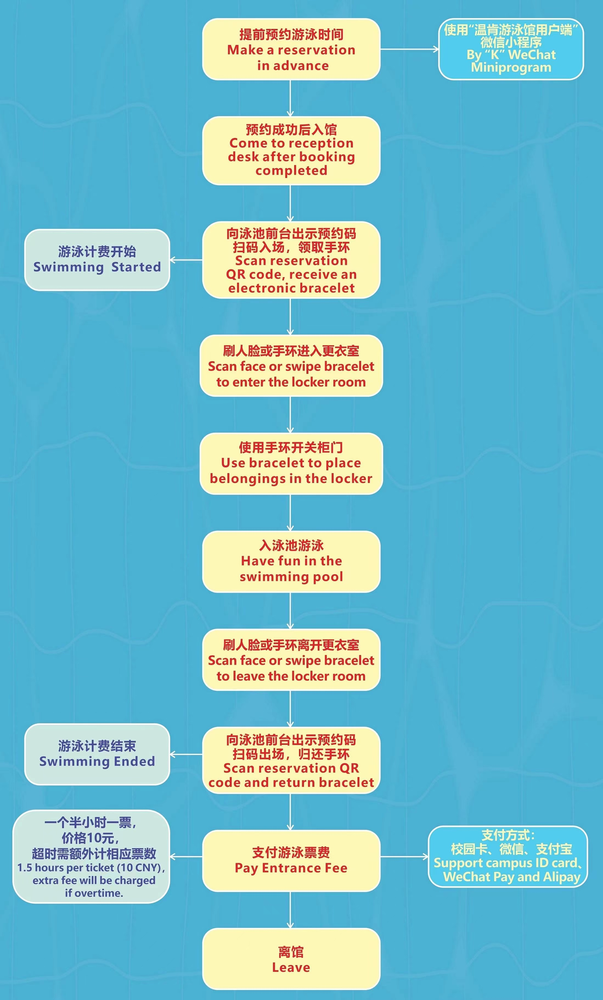
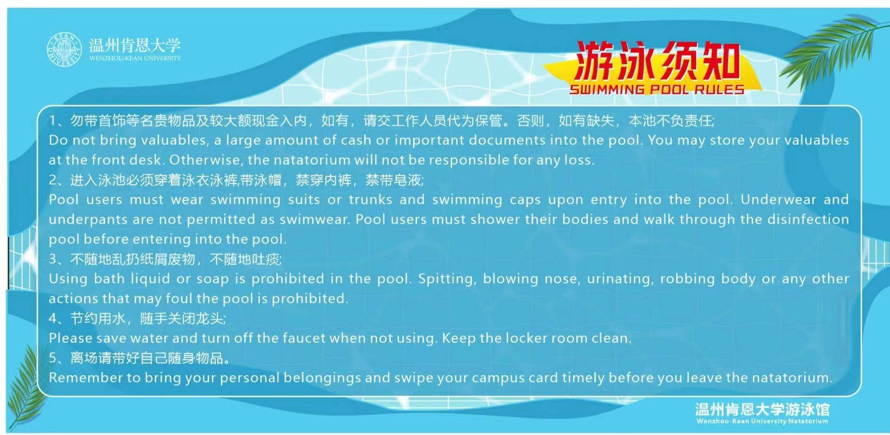

Swimming Pool Operation Notice
为丰富校园体育活动，满足全民健身需求，我校游泳馆于2022年9月30日面向全校师生试运营开放。现将游泳馆使用须知通知如下
Content
游泳馆概况
游泳馆开放时间
入馆线路
游泳馆入馆流程
游泳馆收费标准如下
游泳馆注意事项
游泳馆使用须知
一、游泳馆概况
温州肯恩大学游泳馆包含接待前厅，男女更衣室以及游泳池周边区域，游泳池规格为25米长15米6道宽，深度1.2-1.5。
游泳池除配有标准水循环系统，水质消毒系统，热泵加热系统之外，新风及恒温湿系统保障馆内冬暖夏凉，符合一年四季运动健身需求
二、游泳馆开放时间
2023春季学期开放时间为13:00-21:00（周一至周日），注：法定节日按需开放。
三、入馆线路
游泳馆位于田径场西南方地下室，请从田径场1号门阶梯下楼梯进入游泳馆接待厅入馆。
四、游泳馆入馆流程
sign up link
- 使用“温州肯恩大学客户端”微信小程序进行在线预约，操作方式见附件
- 凭预约的二维码扫码入场，领取手环，刷人脸或手环进入更衣室。
- 刷脸出更衣室后，扫码核销预约码，并归还手环
- 现场缴费完成游泳（未缴费影响后续预约）。

五、收费标准
游泳馆收费标准如下：
| 收费项目 |
收费标准 |
收费方式 |
| 游泳 |
10元/90min |
现场缴费 |
| 泳帽 |
5元/个 |
现场缴费 |
| 泳镜 |
5元/个 |
现场缴费 |
| 拖鞋 |
5元/双 |
现场缴费 |
注：超时需要补相应票数（泳帽，泳镜，拖鞋价格为按作业要求添加的，不是WKU实际收费
六、游泳馆注意事项
- 遵循游泳馆进出馆流程，进出馆均需扫码核票。
- 请自备泳衣和泳帽，不符合要求人员不予入场。
- 贵重物品请勿携带至馆内，如有丢失，游泳馆概不负责。
- 洗浴用品、澡巾、拖鞋可于更衣室内使用，禁止带入游泳池区域。
- 遵循游泳馆管理制度(见附件)，不在泳池区域嬉戏打闹、潜泳、跳水，儿童需在成人陪同下入馆游泳。
- 及时领取和归还手环，爱护泳池器材设备，个人物品妥善保管清理，构建文明游泳环境。

七、其他说明
线上预约系统每个账号可预约4张票，教职员工家属可由教职工本人代预约入馆。
建议与投诉邮箱: wkusportvenue@wku.edu.cn